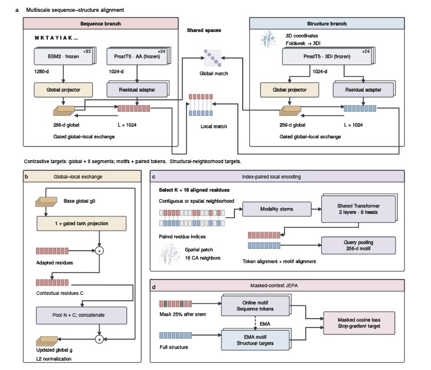
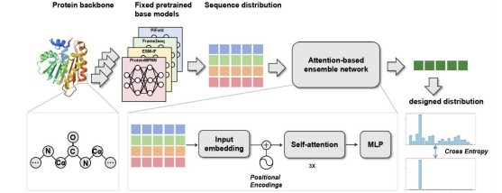

多模态检索 / 2025 — NOW
AlignProt
序列与结构的多尺度对齐

探索项目 ↗
核心开发者 · 2025.04–至今
构建序列–结构双编码检索框架，同时支持整蛋白与局部 motif 检索。结合多尺度表示、残基级对齐和局部–全局双向交互，探索细粒度的蛋白质表示学习。
AI FOR SCIENCE / COMPUTATIONAL BIOLOGY
连接序列、结构与功能。
用人工智能，探索生命的更多可能。
研究生命的语言，
也尝试写下新的可能。
我在上海交通大学攻读计算生物学博士。从生物信息学出发，我的研究逐渐聚焦于蛋白质的序列、结构，以及人工智能如何连接它们。
我参与开发蛋白质设计与多模态检索模型，也探索让智能体连接科研工具与证据。这里记录我的研究、成长，以及实验室之外的生活。
在这里，你也可以亲手探索蛋白质设计的基本过程。
沿着主链，观察蛋白质的整体折叠。
Crambin · 46 个氨基酸 · X 射线晶体结构 · PDB: 1CRN ↗
结构步骤使用真实实验结构 1CRN；其余流程与候选序列为教学示意，不代表该蛋白质的实际设计结果。
理解蛋白质 → 设计蛋白质 → 连接研发流程
暂未找到匹配项目。试试其他关键词，或选择“全部项目”。
序列与结构的多尺度对齐

核心开发者 · 2025.04–至今
构建序列–结构双编码检索框架，同时支持整蛋白与局部 motif 检索。结合多尺度表示、残基级对齐和局部–全局双向交互，探索细粒度的蛋白质表示学习。
让异构模型协作设计蛋白质

核心开发者 · 2024.03–2025.03
预印本共同第一作者
基于注意力机制融合异构逆折叠模型的互补信息。参与预训练、调参、消融实验，以及 benchmark 数据集和评分指标构建。
阅读预印本 ↗面向细胞与基因治疗的研发智能体
核心开发者 · 2026.05–至今
连接文献、专利、靶点、载体与临床前分析。以任务调度、专业执行、独立审查和定向返工形成协作流程，支持证据溯源与报告归档。
从生物信息学到计算生物学，
把问题带进新的方法，
再把方法带回真实的研究。
生物信息学基础
↓蛋白质表示与设计
↓连接工具与证据的科研智能体
计算生物学 · 直博在读
生物信息学 · 本科
三等奖
ICM H 奖
从模型开发到生命科学问题
探索生命，也探索生活。
雪道上的尝试、现场的音乐、朋友的陪伴，都是我的一部分。